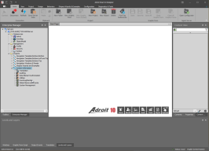
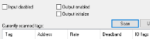

Adroit provides the following features and improvements:
The SmartUI applications now support the following two themes that affect how these applications are displayed:

|
 |
| Light | Dark |
Users can select which theme they want to use, when installing the SmartUI Operator, Designer or Server for the first time (in other words this is not displayed when any of these components are installed subsequently), from the following installation dialog:

Tip: You change this theme at any time by opening the Adroit Config Editor and specifying the required option from the Theme list box at the bottom of this application.
The product icons have been revised and updated and standardised and are now classified using different colored vertical bars on their left hand side. Each color representing the following categories of function to make them easier to recognise and use:
The  Adroit Utilities has been added to provide a central location from which the installed utilities can be launched, instead of installing a host of separate shortcuts for each individual utility. This shortcut is also installed on the Desktop.
Adroit Utilities has been added to provide a central location from which the installed utilities can be launched, instead of installing a host of separate shortcuts for each individual utility. This shortcut is also installed on the Desktop.
This application also describes their supported command line options and by right clicking the utility you can specify which command line options you want to use when launching the utility.
Added the Accumulator agent that calculates the difference in value (or delta) of a value that accumulates over time between successive events or over a specific time period (interval).
You can also specify a MS SQL database to maintain a history of these periodic counts/totals.
You can also configure alarm limits for both the (differential) value and rate of change in value for the current period.
Added the ICMP or PING agent that uses the Internet Control Message Protocol to troubleshoot network problems.
By continuously polling the specified remote IP address, this agent is therefore able to identify potential network problems as they occur by generating alarms when errors are obtained when attempting to contact the specified remote IP address and/or when the round trip time exceeds specified High and High-high times.
Added the DumpConfig agent, which simply stores the configuration of specific agents in an OLE DB database.
One example for its use is when you need to report on agents in the context of their configuration at the time of the report, alternatively this could be used as an extensive method of auditing changes made to specific agents.
The following primitive agent types have also been added to HMI mode: Real and Integer, however these agents (including Boolean) should ONLY be used where efficient use of memory is required.
PLEASE NOTE: These legacy primitive agents do not support Alarming and other SCADA functionality, use Analog/Digital agents instead!
The Analog agent now provides support for up to 51 bit numbers, in that the new maximum range is 2,000,000,000,000,000 for unsigned numbers or -1,000,000,000,000,000 to 1,000,000,000,000,000 for signed numbers.
To reduce the loss of accuracy in scaling caused by IEEE conversion issues, the Analog agent bypasses the scaling calculation, when the scaling is 1:1.
The AlarmManagement agent now provides the Integer kpiCalcRate slot that sets the maximum rate at which the KPIs should be calculated, in minutes, to improve the performance of this agent, which by default is set to 1.
If this slot is set to 0 then KPI calculations are NEVER executed on new or changed alarm occurrences and so also added the Boolean kpiCalcNow slot that pulses to allow users to perform a KPI calculation at any time, especially when they have set the kpiCalcRate slot to 0.
The Notify agent now provides a valueEx VARSTRING slot that is now SMS’d or emailed to subsystems that can handle long strings. It is also the slot that is saved to the WGP file.
Custom agents created via the Custom Agent Designer that require scripting intelligence now provides support for JavaScript (.jav file) or you can choose to use the existing VBScript (.vbs file).
The enhanced SNMPMgr agent replaces the legacy SNMPManager agent
This agent supports up to SNMP version 3 and allows an MIB file to be browsed in, in order to select which OID values you need to monitor and/or control and/or trap.
file to be browsed in, in order to select which OID values you need to monitor and/or control and/or trap.
Any existing SNMPManager agent is converted to SNMPMgr agent when the Agent Server loads.
This agent does not use .wgx files as now the OID configuration of your SNMPMgr agents are saved to the Agent database (.wgp) file directly.
Various improvements have been made in the way the SNMPMgr agent handles reporting the quality (the bad or good state) of the OID list linked tags.
For a new project, the available agent types are now classified into the following default groups to better facilitate the selection of the required agent when designing your system:
Basic: these agent types form the basic building blocks of a system and are used for gathering, handling and processing data to and from the physical external world.
Analog, Counter, Date, Digital, Expression, Marshal, MultiState, String, StringList, Timer
Advanced: these agent types provide powerful SCADA and integration functionality that allow the Basic agents to be alarmed and logged to databases and provides various means of reporting and/or controlling their values.
AgentGroup, Alarm, Alarm List, AlarmManagement, ARec, Command, DbAccess, DBLog, EventLogging, EventOutput, Multimedia, Notify, Recipe, Scheduler, Script, Shift, Statistical
MIS/MES: these are very specific and usually quite complex agent types used to do monitor, control and solve higher level shop-floor and general industrial challenges.
MaxDemand, OEE, PID
IT: these agent types facilitate the integration and management of SCADA and IT
Audit, DumpConfig, ICMP, Perfmon, SNMPMgr
System: these agent types are used internally to perform certain SCADA and other specific functions.
Note: Instances of these Agents are created automatically and cannot be added manually by the user.
Alias, Beeper, DataLog, Device, Hasp, Proxy, Scan, SystemDataLog, SystemInformation
Primitive: these agent types are primitive because they offer limited value and are limited in functionality when compared to the Basic agents, they are essentially single value containers.
Boolean, Integer, Real, Text and Frame
IMPORTANT: These agent types CANNOT be alarmed and their values are not scaled etc, so use the Basic agent types instead to represent your process values.
Hence the Agent filter section of the Agent Configuration dialog provides checkboxes for these default agent groups which if checked, allows you to determine which agent types are displayed in the Type list:

Simplified the configuration of scanning related settings when scanning tags, hence the following checkboxes appear in the Tag Scanning Configuration dialog:

Also these settings are now being stored in the Agent Database (.wgp) file along with the other scanning related settings, such as the scan address, scan rate etc, as an IO flags setting, which is displays as an additional column in the Currently scanned tags list.
For this reason Adroit WGP files for 10 are NOT backward compatible with previous versions, which saved these settings in the agent header slots.
Added support for NASA protocol drivers a sub-class of protocol drivers specifically written to take advantage of the scanning improvements and enhancements provided by NASA (New Adroit Scanning Architecture), such as demand scanning and highly optimised scan tasks.
The demand scanning of tags, ensures that tags are only communicated when they are being used. For example a graphic form is open with the tag in it. Once the graphic form closes, if this is the only subscription (reference) to this tag then the communication of that tag will stop.
Added the OPC UA client, a NASA driver, which communicates with OPC UA Servers in accordance with the OPC UA specification. OPC UA (OLE for Process Control Unified Architecture) is a standard specification that makes it possible for automation/control software applications and field systems/devices to interoperate and communicate data between each other. Since this is NASA driver it provides support for demand scanning and highly optimised scan tasks.
The logging to ADO (SQL) databases by the Datalog agent is disabled by default (the SQL... button of the Datasource field is hidden in the Edit Datalog agent dialog). This is to force users to use the DBLog agent instead, which logs data to SQL more efficiently.
Although if the Agent Server loads a legacy WGP file that ALREADY contains an ADO datalogging configuration, then the SQL... button of the Datasource field will be visible in the Edit Datalog agent dialog.
The Datalog agent should therefore only be used for proprietary logging and the datalog period (Length...) should not exceed what is required for operational trending purposes.
In other words, should an operator only need to see 24 hours of trend data to properly monitor and control his plant then the datalog period should only be set for 1 day. Historical data (i.e. data outside of the datalog period), if requested, will be retrieved from the backup files, if required.
When the allocated size of the datalog (.LGD) file is filled, it wraps (starts again at the beginning). At which time one or more datalog backup (.LGB) files are created to store this older (historical) data. The datalogging sub-system automatically retrieves this historical data from these files, when this data is required by trends (charts) or other requests for historical data.
In Adroit 10, the naming convention of these backup files have improved compared to Adroit  More details:
More details:
When creating monthly datalog backup files in Adroit
For instance:
1. A data value with a timestamp of 2017-11-21 10:00:00 would go to a backup file called 2017-11-21-m-11
2. A data value with a timestamp of 2017-11-22 10:00:00 would go to a backup file called 2017-11-22-m-11
In Adroit 10, the name of the backup file only specifies the year and month so that now only one file is created for the month.
For instance:
1. A data value with a timestamp of 2017-11-21 10:00:00 would go to a backup file called 2017-11
2. A data value with a timestamp of 2017-11-22 10:00:00 would also go to a backup file called 2017-11
Enhanced the Agent Browser utility, as follows:
This dialog is now resizable and when the selected slot is a LIST slot then a browse (...) button is displayed to the right of the slot value, which when clicked displays the contents of this LIST slot in a table with the required headings.
Double clicking an agent displays a dialog that allows you to view the real time status of an agent at a glance.
By default the Agent Browser displays a categorised view of the double-clicked agent, although you can check the Sorted checkbox to display an alphabetical listing.

You can also click the Previous / Next buttons (or use the PAGE UP / PAGE DOWN keys) to view other agents of the selected agent type, in this manner.
When launched in admin mode you can add or remove agents from it using the + or - buttons of the Agents list.
Added the Ping tab to the Agent Server Monitor utility, which can help you determine whether any of the currently connected clients have connection issues to the Agent Server.
The alarm and event routes support lists of up to 256 characters instead of the legacy 80 characters.